Final Fantasy I (1987)
Cuatro Guerreros de la Luz deben restaurar los cristales elementales y derrotar a Chaos, iniciando la saga con un clásico RPG de fantasía medieval.
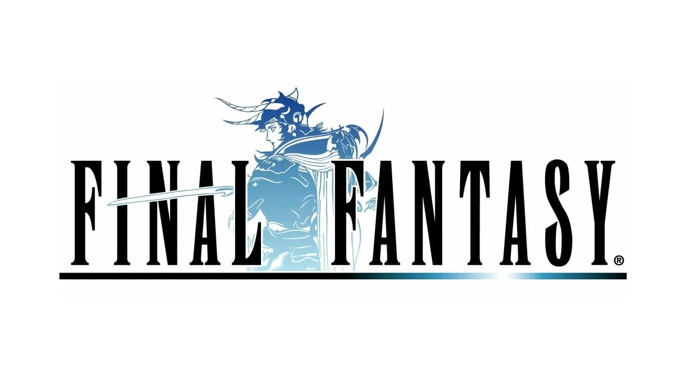Cuatro Guerreros de la Luz deben restaurar los cristales elementales y derrotar a Chaos, iniciando la saga con un clásico RPG de fantasía medieval.
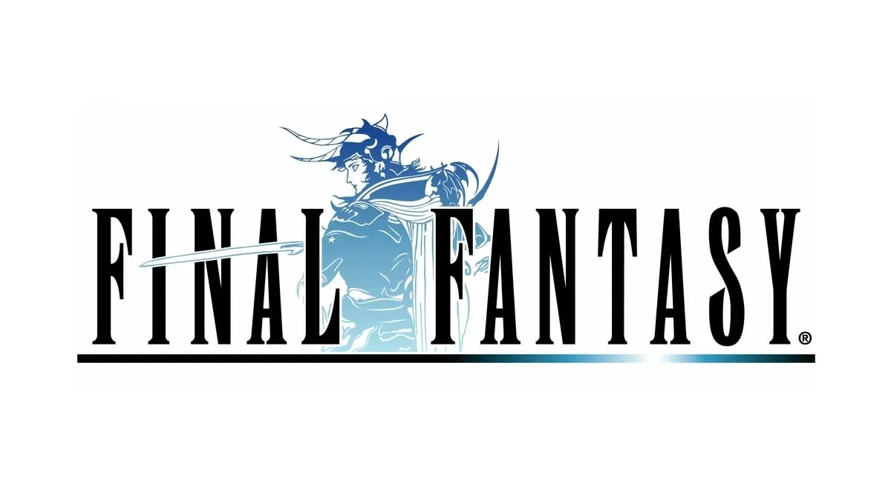Un grupo de huérfanos se une a la resistencia contra el Imperio de Palamecia. Introdujo personajes definidos y un sistema de crecimiento sin niveles.
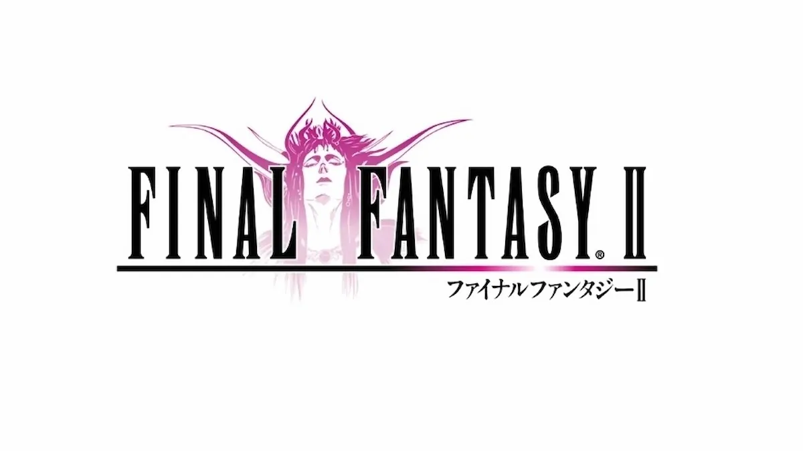Cuatro jóvenes elegidos por el Cristal deben salvar el mundo de la oscuridad. Destaca por el sistema de jobs que permite cambiar de clase.
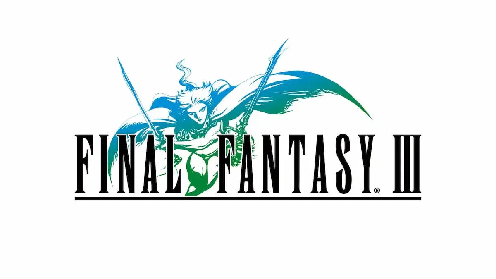Cecil, un caballero oscuro, busca redención mientras enfrenta conspiraciones cósmicas. Fue el primero en profundizar en la narrativa y personajes.
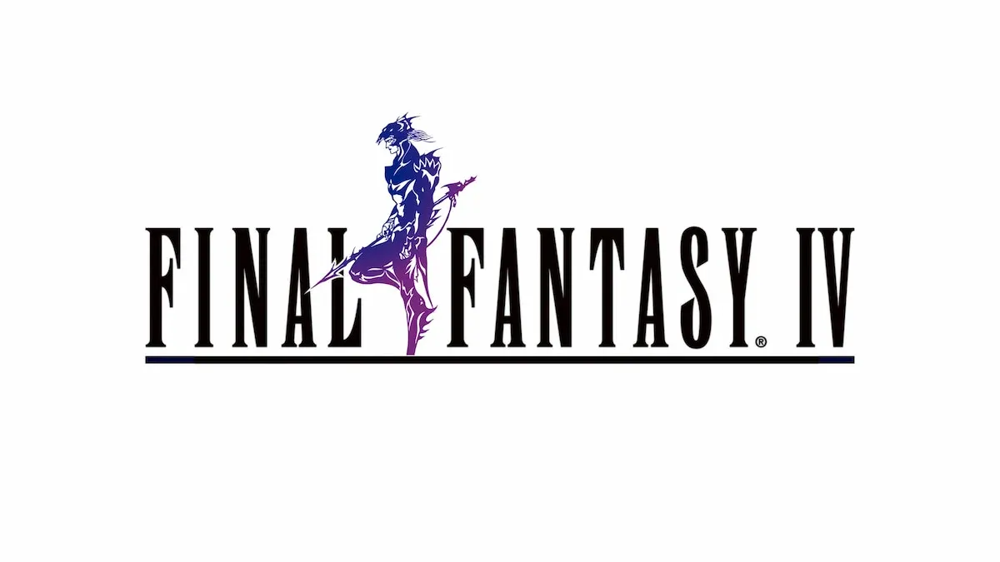Bartz y sus compañeros protegen los cristales de la destrucción. Expande el sistema de jobs con gran personalización.
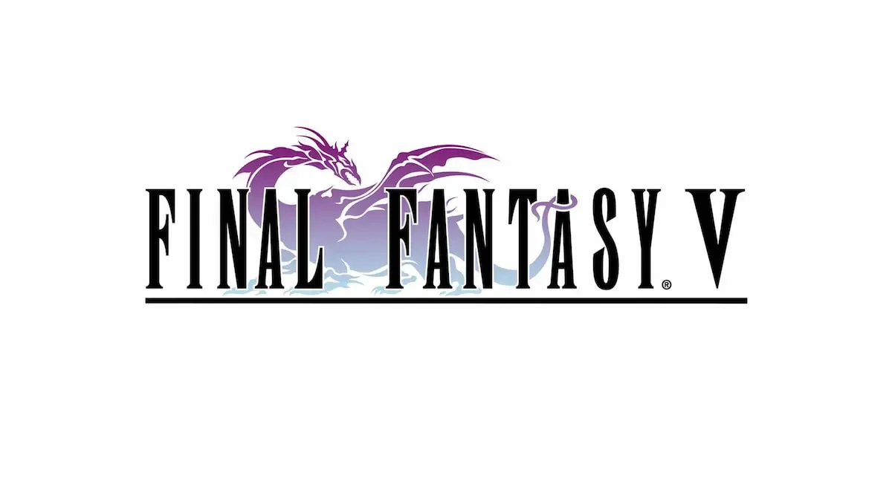Terra y un grupo diverso luchan contra el tirano Kefka en un mundo steampunk. Considerado uno de los más emotivos y con villanos memorables.
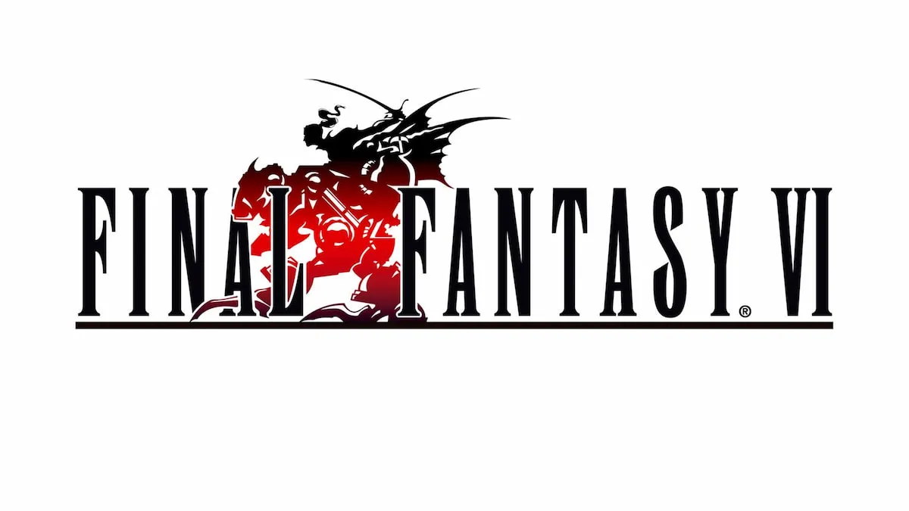Cloud y Avalanche enfrentan a Shinra y Sephiroth en un mundo futurista. Revolucionó el RPG con gráficos 3D y una historia profunda.
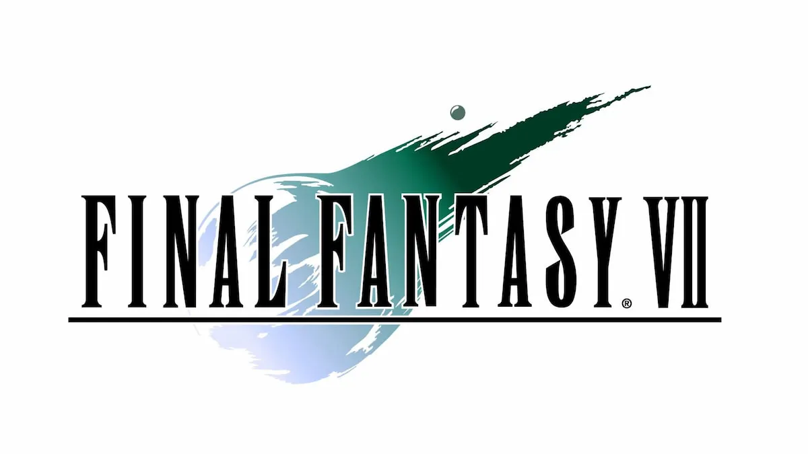Squall y SeeD combaten a la hechicera Edea. Introdujo el sistema de junction y una trama romántica central.
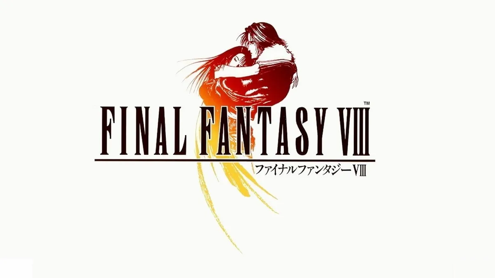Zidane y sus amigos luchan contra fuerzas cósmicas en un mundo clásico de fantasía. Es un homenaje a las raíces medievales de la saga.
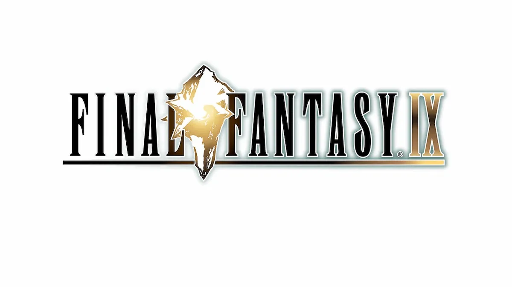Tidus y Yuna emprenden un peregrinaje para derrotar a Sin en Spira. Fue el primero con voces y gráficos en 3D completos, con una historia trágica y emotiva.
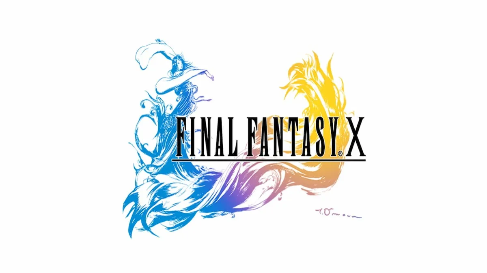